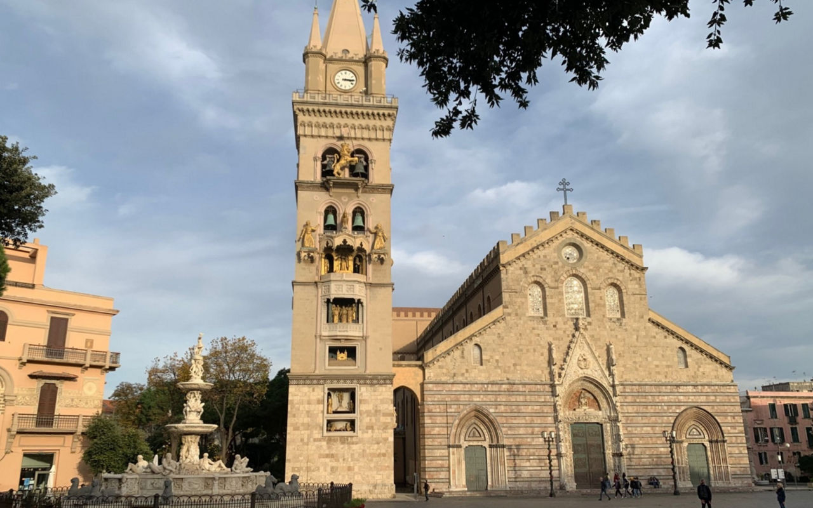

Dati Tecnici:
- Forma: Rettangolare ampia.
- Superficie: Circa 6.000 m².
- Materiali: Pietra calcarea e marmi.
- Accessibilità: Pedonale.
Storia e Descrizione: Cuore della ricostruzione post-1908, la piazza ospita l'Orologio Astronomico più grande del mondo. Rappresenta la resilienza di Messina, bilanciando ampi spazi aperti antisismici con la monumentalità del Duomo ricostruito in forme normanne.

Monumenti Chiave:
- Campanile Astronomico: Orologio meccanico con figure animate.
- Fontana di Orione: Capolavoro rinascimentale del Montorsoli.
- Basilica Cattedrale: Imponente struttura normanna.